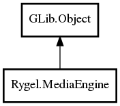

MediaEngine
Object Hierarchy:

Description:
public abstract class MediaEngine : Object
This is the base class for media engines that contain knowledge about the streaming and (optionally) the transcoding and seeking
capabilites of the media library in use. Derived classes also instantiate any transcoding objects supported by the media engine and
specify the list of media formats the engine is capable of playing.
See, for instance, Rygel's built-in "gstreamer" and "simple" media engines, or the external rygel-gst-0-10-media-engine module.
The actual media engine used by Rygel at runtime is specified by the media-engine configuration key. For instance, in rygel.conf: media-
engine=librygel-media-engine-gst.so
Media engines should also derive their own #RygelDataSource, returning an instance of it from create_data_source().
If this media engine supports transcoding then it will typically implement a set of transcoding classes, typically with one base class
and a number of sub-classes - one for each transcoding format you want to support. These should be returned by the get_transcoders()
virtual function. The base transcoder class could provide a generic way to create a #RygelDataSource capable of providing Rygel with a
transcoded version of a file using the underlying media framework. The sub-classes could contain the various media-framework-specific
parameters required to transcode to a given format and implement a heuristic that can be used to order an item's transcoded resources.
See the <link linkend="implementing-media-engines">Implementing Media Engines</link> section.
Content:
Static methods:
Creation methods:
Methods:
- public abstract unowned
List<DLNAProfile> get_dlna_profiles ()
Get a list of the DLNA profiles that are supported by this media
engine when calling rygel_media_engine_create_data_source().
- public abstract unowned
List<Transcoder>? get_transcoders ()
Get a list of the transcoders that are provided by this media engine.
- public abstract DataSource? create_data_source (
string uri)
Get a data source for the URI.
Inherited Members:
All known members inherited from class GLib.Object
- @new
- newv
- new_valist
- get_type
- get_class
- @ref
- unref
- ref_sink
- weak_ref
- weak_unref
- add_weak_pointer
- remove_weak_pointer
- @get
- @set
- get_property
- set_property
- get_data
- set_data
- set_data_full
- steal_data
- get_qdata
- set_qdata
- set_qdata_full
- steal_qdata
- freeze_notify
- thaw_notify
- dispose
- constructed
- notify_property
- connect
- disconnect
- add_toggle_ref
- remove_toggle_ref
- bind_property
- notify
- ref_count